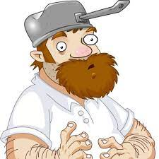
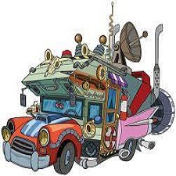
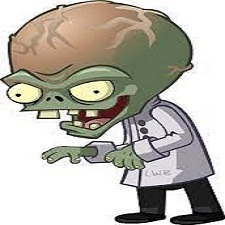

Hola, bienvenido a mi página web donde estaré hablando sobre el videojuego Plants vs Zombies 2.
Este es un videojuego de estilo Tower defense que fue lanzado oficialmente en el año 2013 por la empresa Electronic Arts (EA) en conjunto con PopCap Games. El juego es la secuela de la entrega original (PvZ) y en comparación con este último el segundo juego viene siendo algo más difícil además de que trae nuevas funciones y conserva su jugabilidad original.
El juego cuenta con muchos personajes que vienen del primer juego o personajes nuevos. A continuación, un resumen de dichos peronajes.
|  |
Este particular hombre es uno de los primeros a quien nos encontramos mientras vamos avanzando en el juego. Su primera aparición sucede en el Tutorial y solo lo hace para presentarse además de su máquina del tiempo. Es nuestro vecino del cual nos da consejos para luchar contra los zombies.
Una de sus características más particulares es la de llevar una olla en la cabeza como protección y también está el hecho de que no habla. En el transcurso del Tutorial él consigue un taco, que por el hecho de estar tan rico, decide viajar al pasado para volver a comerlo otra vez, pero en lugar de llevarlo unos minutos al pasado termina llegando al Antiguo Egipto y es aquí donde empieza esta loca travesía a través del tiempo hasta volver de nuevo al presente (con cambios de línea temporal) todo por conseguir ese taco nuevamente.
|  |
Al igual que con nuestro vecino Dave, esta peculiar camioneta también cuenta como protagonista en el juego. Esta es la máquina del tiempo que transporta a Dave a través de las épocas en busca de ese preciado taco. Es más activa que Dave en cuanto a tutoriales se refiere y puede ayudarnos a usar determinadas plantas y proporcionar información sobre determinados zombies.
Algunas curiosidades de ella son que utiliza un aparato llamado "Traductor de Gügle" como parodia al de la vida real. El Dr. Zomboss asegura que Penny es muy similar a sus robots. En un vaso de gaseosa que tiene en su lado izquierdo se hace referencia a Mc Donald's con una "W" en lugar de una "M" además de hacer referencia a su primera propuesta de nombre (Winnie).
|  |
Aquí tenemos al principal antagonista del juego. El Dr. Edgar George "Zomboss" como nombre completo es el jefe final de cada uno de los mundos por los que viajamos, tiene una dureza extremadamente elevada y en cada uno de los mundos se aparece con un nuevo Zombot al que hay que derrotar. Tiene una caligrafía y ortografía muy desarrollada y junto con los demás zombies buscarán evitar que consigamos el taco ya que, según él, viajar por el tiempo modificando toda la línea temporal puede llevar a un colapso del espacio-tiempo y eso nos lo hace saber el los últimos 3 niveles del último mundo en donde regresamos al presente (Tiempos modernos).